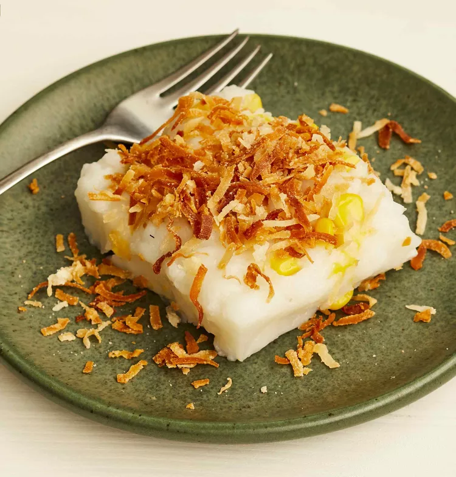

Maja Blanca

Description
Maja blanca is a Filipino dessert with a gelatin-like consistency made primarily from coconut milk.
Also known as coconut pudding, it is usually served during fiestas and during the holidays, especially Christmas.
Ingredients
- ½ cup water
- ½ cup cornstarch
- 1 cup coconut milk
- ¾ cup water
- ½ cup white sugar
- ¼ cup fresh sweet corn kernels
- ¼ cup sweetened flaked coconut
Steps
- Butter an 8-inch baking dish or pie pan and set aside.
Mix together 1/2 cup water and cornstarch in a bowl until smooth; set aside.
- Combine the coconut milk, 3/4 cup water, and sugar in a saucepan over low heat and stir until the sugar is dissolved.
Bring to a boil, add the corn kernels, and stir in the cornstarch mixture, stirring quickly to avoid lumps as it becomes very thick.
Return to a boil and simmer until fully thickened and smooth, stirring constantly, about 2 minutes.
Pour the maja blanca into the prepared dish and set aside to cool until firm, about 2 hours.
- Place the coconut flakes in a dry skillet over medium heat and stir to toast. Watch carefully so they don't burn.
Remove the toasted coconut flakes to a bowl, let cool, and sprinkle over the pudding before serving.
Home